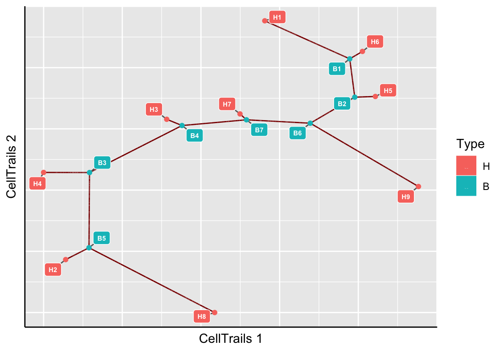
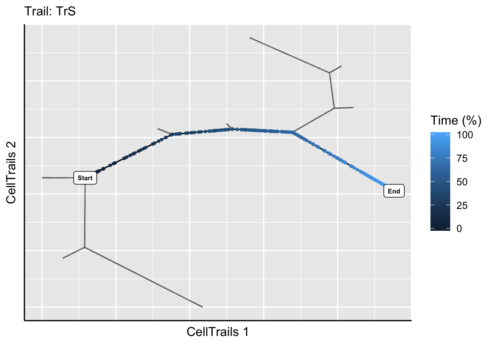
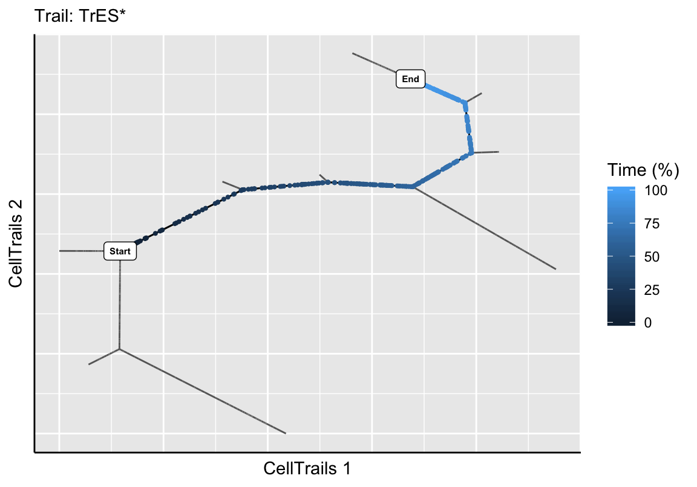
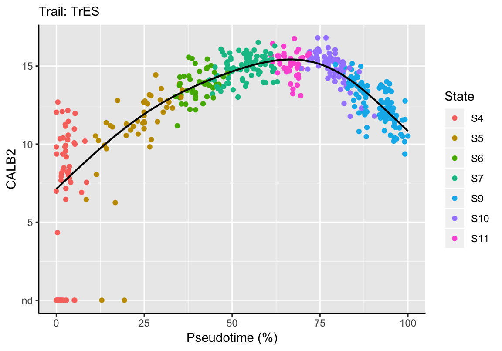
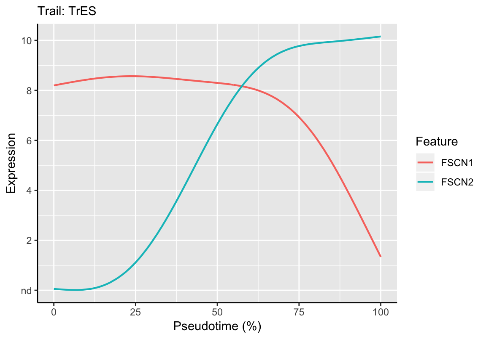

Chapter 8 Expression Dynamics
During the trajectory fitting process, landmarks are automatically identified on the trajectory: trail heads (leafs), H, and branching points, B. The assigned landmark IDs can be obtained via landmarks. We use this information to define individual trails along the trajectory.
8.1 Trail Definition
Trails are usful to infer expression dynamics of features along subsections of the trajectory. A trail denotes a path between two landmarks. To be able to properly define a trail, we display the available landmark points on the trajectory map.
plotMap(exBundle, color_by="phenoName", name="landmark")
Based on the experimental metainformation and the expression pattern of marker features, we identified in the original CellTrails publication path B3 to H9 as developmental trail toward a striolar sensory hair bundle morphology, and B3 to H1 as developmental trail toward an extrastriolar bundle morphology. Let’s mark those trails on the map using the function addTrail.
# Define trails
exBundle <- addTrail(exBundle, from="B3", to="H9", name="TrS")
exBundle <- addTrail(exBundle, from="B3", to="H1", name="TrES")
showTrajInfo(exBundle)## [[ CellTrails ]]
## logcounts: 183 features, 1008 samples
## Pheno data:
## sampleNames: "Cell-1-1" "Cell-1-2" ... "Cell-11-82" (1008)
## phenoNames: "fm143" "origin" ... "landmark" (6)
## Feature data:
## featureNames: "ABCA5" "ARF1" ... "USH2A" (183)
## rowData: none
## Trajectory data:
## trajFeatureNames: "ABCA5" "ARF1" ... "USH2A" (183)
## latentSpace: 1008 samples, 9 dimensions
## states: "S1" "S2" ... "S11" (11)
## Trajectories: [Component(#Vertices,Edges)]: 1(10,9)
## trajSampleNames: "Cell-1-1" "Cell-1-2" ... "Cell-11-82" (896)
## trajResiduals: MSE=9.9e-03
## landmarks: #Branches=7 #Terminals=9 #User=0
## trajLayout: available
## Trail data:
## trailNames: "TrS" "TrES" (2)Next, we want to make sure that the intended trails were extracted by showing the trajectory map and highlight the defined trails along with its corresponding pseudotime.
plotTrail(exBundle, name="TrS")
plotTrail(exBundle, name="TrES")The function addTrail automatically extracts the samples and their pseudotime along the trail by computing the shortest path between the trail start and end.
# Get trail names
trailNames(exBundle)## [1] "TrS" "TrES"# Get trail pseudotime
trails(exBundle)[1:5, ]## DataFrame with 5 rows and 2 columns
## TrS TrES
## <numeric> <numeric>
## Cell-1-1 0.5776028 NA
## Cell-1-2 NA NA
## Cell-1-3 NA NA
## Cell-1-4 NA NA
## Cell-1-5 NA 0.8723274The pseudotime information is automatically stored as sample metadata (see phenoNames). For example, we could plot it on the lower-dimensional manifold.
# Get trail names
plotManifold(exBundle, color_by="phenoName", name="TrS")
Also, the data is accessible via colData of the SingleCellExperiment object and can therefore be analyzed using alternative packages. For example, colorizing the trail TrS in a principal component analysis using the scater package (McCarthy et al. 2017).
## Not run:
##library(scater)
## End(Not run)
# Plot scater PCA with CellTrails pseudotime information
scater::plotPCA(exBundle, colour_by="CellTrails.TrS")Please note that trails can be renamed with trailNames<- and removed with removeTrail, respectively. Adding another trail with the same name, will show a warning message and override the existing definition.
8.2 Defining Subtrails
It might be needed to define subtrails if trails overlap. This is neccessary if the dynamics of one trail are subdynamics of another trail. Because pseudotime mirrors the location of each datapoint in the latent space, a significant gap in pseudotime could indicate separate sample populations. However, these populations have only subtle feature expression profile differences and were linearly aligned in the latent space. Since pseudotime can also be interpreted as a function of transcriptional change, one can argue that these populations undergo the same expression program (for the selected features), with the small but distinct difference that samples ordered at the terminal end of the longer trail up- or down-regulate additional features late during their maturation. Thus, trails can overlap, while one trail is a subtrail of the longer trail.
8.2.1 Using yEd
U landmarks that are needed to define a subtrail can be determined by the user, as demonstrated in the following.
First, we want to give a rational for selecting a specific node. As described in the original CellTrails article, we found a gap in pseudotime near the terminal end of trail TrES, which might indicate that the terminal state can be split, and two trails are actually overlapping. This gap becomes already quite obvious visually when we utilize yEd to have a closer look into the trajectory graph. First, we export the graph. By default, nodes are colorized by state (see CellTrails Maps / Graph Layout).
write.ygraphml(exBundle, file='yourFileName.graphml')Then we open the graphml file in yEd. The gap in the purple colored population is obvious:
To indicate this sample as landmark, we simply change the shape of this node. This can be any shape, but not ellipse, which is used as default for other nodes. The shape can be changed using the Properties View panel on the right border of the yEd application.

After saving the layout, it can be reimported to CellTrails and the landmark can be used to define the subtrail:
# Trail Identification
plotMap(exBundle, color_by="phenoName", name="landmark")
exBundle <- addTrail(exBundle, from="B3", to="U1", name="TrES*")
plotTrail(exBundle, name="TrES*")
showTrajInfo(exBundle)## [[ CellTrails ]]
## logcounts: 183 features, 1008 samples
## Pheno data:
## sampleNames: "Cell-1-1" "Cell-1-2" ... "Cell-11-82" (1008)
## phenoNames: "fm143" "origin" ... "landmark" (7)
## Feature data:
## featureNames: "ABCA5" "ARF1" ... "USH2A" (183)
## rowData: none
## Trajectory data:
## trajFeatureNames: "ABCA5" "ARF1" ... "USH2A" (183)
## latentSpace: 1008 samples, 9 dimensions
## states: "S1" "S2" ... "S11" (11)
## Trajectories: [Component(#Vertices,Edges)]: 1(10,9)
## trajSampleNames: "Cell-1-1" "Cell-1-2" ... "Cell-11-82" (896)
## trajResiduals: MSE=9.9e-03
## landmarks: #Branches=7 #Terminals=9 #User=1
## trajLayout: available
## Trail data:
## trailNames: "TrS" "TrES" "TrES*" (3)Please note that the trajectory graph can also be exported having all landmarks highlighted. This is particulary helpful if user-defined landmarks need to be changed.
# Export Trajectory Graph Layout with sample names
write.ygraphml(exBundle, file='yourFileName.graphml',
color_by="phenoName", name="landmark",
node_label="landmark")Here, blue nodes denote user-defined landmarks, green nodes are branching points and red nodes are leafs. Landmark IDs, as listed by landmarks, are indicated as node names, respectively.
8.2.2 Using R
A visual and empiric identification of user-defined landmarks can be helpful, but scientifically more appropriate is a statistical approach. For this purpose we analyze the distribution of all lagged differences along trail TrES. Here, we make use of the pseudotime information of each trail, respectively.
# Extract pseudotime of TrES
ptime <- trails(exBundle)[, "TrES"]
# Subset SingleCellExperiment set
# to samples which are part of trail TrES
trES <- exBundle[, !is.na(ptime)]
# Order samples by pseudotime
o <- order(trails(trES)[, "TrES"])
trES <- trES[, o]
ptime <- trails(trES)[, "TrES"]
names(ptime) <- colnames(trES)
# Lagged pseudotime values per state
ptime_states <- split(ptime, states(trES))
lptime <- lapply(ptime_states,
function(x){y <- diff(sort(x)); y[-length(y)]})
bp <- boxplot(lptime, horizontal=TRUE,
ylab="State", xlab="Pseudotime delta", las=2)The boxplot statistics indicate that there is a strong outlier in state S9 (which is termed state i in the original CellTrails article). Let’s extract the sample right before the leap.
leap <- lptime$S9[which.max(lptime$S9) - 1]
names(leap)## [1] "Cell-8-57"The function userLandmarks<- enables us to (re-)define the set of user landmarks.
userLandmarks(exBundle) <- names(leap)
# Trail Identification
plotMap(exBundle, color_by="phenoName", name="landmark")exBundle <- addTrail(exBundle, from="B3", to="U1", name="TrES*")
plotTrail(exBundle, name="TrES*")
showTrajInfo(exBundle)## [[ CellTrails ]]
## logcounts: 183 features, 1008 samples
## Pheno data:
## sampleNames: "Cell-1-1" "Cell-1-2" ... "Cell-11-82" (1008)
## phenoNames: "fm143" "origin" ... "landmark" (7)
## Feature data:
## featureNames: "ABCA5" "ARF1" ... "USH2A" (183)
## rowData: none
## Trajectory data:
## trajFeatureNames: "ABCA5" "ARF1" ... "USH2A" (183)
## latentSpace: 1008 samples, 9 dimensions
## states: "S1" "S2" ... "S11" (11)
## Trajectories: [Component(#Vertices,Edges)]: 1(10,9)
## trajSampleNames: "Cell-1-1" "Cell-1-2" ... "Cell-11-82" (896)
## trajResiduals: MSE=9.9e-03
## landmarks: #Branches=7 #Terminals=9 #User=1
## trajLayout: available
## Trail data:
## trailNames: "TrS" "TrES" "TrES*" (3)Please note that all user-defined landmarks can be removed using userLandmarks(exBundle) <- NULL.
8.3 Inference of Dynamics
CellTrails defines pseudotime as the geodesic distance of each node of the trail from the start node. To learn the expression level of a feature as a function of pseudotime, CellTrails used generalized additive models (GAM) with a single smoothing term with five basis dimensions. Here, for each feature, CellTrails introduces prior weights for each observation to lower the confounding effect of missing data to the maximum-likelihood-based fitting process.
Feature expression as a function of pseudotime along an individual trail can be plotted with the plotDynamic function. This results in the fitted dynamic function (= black line) and the individual expression per sample (= points represent samples colored by their state membership). For example, the expression of the calcium buffer CALB2 during extrastriolar hair cell development can be displayed as follows:
plotDynamic(exBundle, feature_name="CALB2", trail_name="TrES")
Please note that the fitting function automatically scales pseudotime between 0 and 100% for each trail.
The fit information can be extracted via function fitDynamic and used for further downstream analyses:
fit <- fitDynamic(exBundle, trail_name="TrES", feature_name="CALB2")
summary(fit)## Length Class Mode
## pseudotime 470 -none- numeric
## expression 470 -none- numeric
## gam 52 gam listrange(fit$pseudotime)## [1] 0 1range(fit$expression)## [1] 7.131096 15.419633# Predict expression at 0%, 25%, 50%, 75% and 100% of pseudotime
timepoints <- data.frame(x=c("0%"=0, "25%"=.25, "50%"=.5, "75%"=.75, "100%"=1))
predict(fit$gam, newdata=timepoints)## 0% 25% 50% 75% 100%
## 7.131096 11.917652 14.649184 15.117750 10.8310078.4 Dynamic Comparison: Within Trails
CellTrails allows the analysis and comparison of the expression of multiple features along a single trail. For example, the expression dynamics of the acting crosslinkers FSCN1 and FSCN2 can be displayed in a single plot as follows:
plotDynamic(exBundle, feature_name=c("FSCN1", "FSCN2"), trail_name="TrES")
By using the fitting function fitDynamic, the similarity/correspondence between curves can be quantified. This allows a quantitative assessment of the observed anticorrelation seen in the plot above between FSCN1 and FSCN2:
fscn1_fit <- fitDynamic(exBundle, trail_name="TrES", feature_name="FSCN1")
fscn2_fit <- fitDynamic(exBundle, trail_name="TrES", feature_name="FSCN2")
# Correlation
cor(fscn1_fit$expression, fscn2_fit$expression)## [1] -0.64321568.5 Dynamic Comparison: Between Trails
Genes have non-uniform expression rates and each trail has a distinct set of upregulated features, but also contains unequal numbers of samples. Since pseudotime is computed based on expression differences between individual samples, the pseudotime axis may be distorted, leading to stretched or compressed sections of longitudinal expression data that make comparisons of such trails challenging. To align different trails, despite these differences, CellTrails employs a strategy that has long been known in speech recognition, called dynamic time warping (Sakoe and Chiba 1978). Feature expression dynamics are modeled analogous to how dynamic time warping is used to align phonetic dynamics present in speech. Innate non-linear variation in the length of individual phonemes (i.e., states) is appropriately modeled, which results in stretching and shrinking of word (i.e., trail) segments. This allows the computation of inter-trail alignment warps of individual expression time series that are similar but locally out of phase. The overall dissimilarity between two expression time series can be estimated by the root-mean-square deviation (RMSD), the total deviation (TD), the area between curves (ABC), or Pearson’s correlation coefficient (COR) over all aligned elements. The warp and the corresponding quantitative score can be computed using the function contrastTrailExpr.
# Compare ATOH1 dynamic
# Root-mean-square deviation
contrastTrailExpr(exBundle, feature_names=c("ATOH1"),
trail_names=c("TrS", "TrES"), score="RMSD")## ATOH1
## 0.0321192# Total deviation
contrastTrailExpr(exBundle, feature_names=c("ATOH1"),
trail_names=c("TrS", "TrES"), score="TD")## ATOH1
## 6.364661# Area between curves
contrastTrailExpr(exBundle, feature_names=c("ATOH1"),
trail_names=c("TrS", "TrES"), score="ABC")## ATOH1
## 0.02300188# Pearson's correlation coefficient
contrastTrailExpr(exBundle, feature_names=c("ATOH1"),
trail_names=c("TrS", "TrES"), score="COR")## ATOH1
## 0.9999033In this example, ATOH1 is expected to have a highly similar dynamic between both trails. Therefore, RMSD, TD, ABC values should be low and COR values high relative to other assayed features.
To identify features that differ between two trails, we can compute the divergence for all features and analyze the Z-score distribution as derived by scale:
# Compare TrS and TrES dynamics
# Root-mean-square deviation
all_rmsd <- contrastTrailExpr(exBundle,
trail_names=c("TrS", "TrES"), score="RMSD")
# Identify highly differing features
all_rmsd <- all_rmsd[all_rmsd > 0]
zscores <- scale(log(all_rmsd))
sort(all_rmsd[zscores > 1.65])## SYN3 AKAP5 OCM SLC8A1 ATP2B2 MYO1H CAB39L MCOLN3
## 1.494187 1.529849 1.601328 1.903307 1.953127 1.981343 2.304601 2.417525
## CHRNA10 MYO3A CIB2 TNNC2 SKOR2 LOXHD1 TMC2
## 2.637487 2.671320 2.790146 3.051273 3.717097 4.129766 4.7997938.6 Parallelization
In the case one wants to compare a large number of features (e.g. from an RNA-Seq experiment), the computation can be significantly sped up by parallel computing. In this example, we use the package doSNOW, but any other package may also be used for this purpose.
library(doSNOW)
# Register parallel backend
cpu.cl <- makeCluster(parallel::detectCores() * 2)
registerDoSNOW(cpu.cl)
# Compute warps
fnames <- featureNames(exBundle)
all_rmsd <- foreach(i=seq_along(fnames), .combine=rbind) %dopar% {
g <- fnames[i]
CellTrails::contrastTrailExpr(exBundle,
feature_name=g,
trail_names=c("TrES", "TrS"),
score="RMSD")
}
stopCluster(cpu.cl)
all_rmsd <- all_rmsd[, 1]
names(all_rmsd) <- fnames# Identify highly differing features
all_rmsd <- all_rmsd[all_rmsd > 0]
zscores <- scale(log(all_rmsd))
sort(all_rmsd[zscores > 1.65])## SYN3 AKAP5 OCM SLC8A1 ATP2B2 MYO1H CAB39L MCOLN3
## 1.494187 1.529849 1.601328 1.903307 1.953127 1.981343 2.304601 2.417525
## CHRNA10 MYO3A CIB2 TNNC2 SKOR2 LOXHD1 TMC2
## 2.637487 2.671320 2.790146 3.051273 3.717097 4.129766 4.799793Please note that the advantage in computation time increases with the number of features; for a small number of features parallel computing may be slower than the sequential approach due to its overhead.
References
McCarthy, DJ, KR Campbell, ATL Lun, and QF Wills. 2017. “Scater: Pre-Processing, Quality Control, Normalisation and Visualisation of Single-Cell Rna-Seq Data in R.” Bioinformatics 14: 1179–86.
Sakoe, H, and S Chiba. 1978. “Dynamic Programming Algorithm Optimization for Spoken Word Recognition.” IEEE Transactions on Acoustics, Speech, and Signaling Processing 26: 43–49.